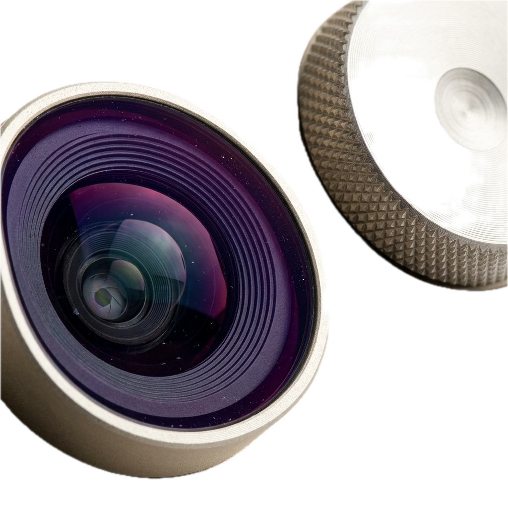

Optische Architektur & Linsen.
Asymmetrisches Frontlinsen-Design mit 6 Glaselementen in 4 Gruppen, kreisrunder 7-Lamellen-Blende und laser-polierter Entspiegelungs-Vergütung.

6 Glaselemente in 4 Gruppen
Asphärische Zylindergeometrie mit Lanthan-Schwerkronglas für rasiermesserscharfe Details bis an den Sensorrand und samtiges Hintergrund-Bokeh.
Warm Amber Nano Coating
Selektiv aufgedampfte Mehrschichtvergütung erzeugt organisch warme Lichtreflexe ohne Kontrastabfall in dunklen Bildbereichen.
Haptisches Drehrad mit 72 Klickstufen
Direkte mechanische Rückmeldung für präzise manuelle Schärfe- und Blendenkorrekturen.
Vollständige Optik-Spezifikationen
| Modell | Brennweite | Lichtstärke | Nahgrenze | Linsenaufbau | Filtergewinde |
|---|---|---|---|---|---|
| Series 1 Model 100 | 18 mm (28mm KB-Äquiv.) | f/2.0 – f/16 | 0.15 m | 6 Elemente in 4 Gruppen | 34 mm Custom |
| NM-28 Cine Wide | 28 mm Anamorph | T2.0 – T22 | 0.45 m | 14 Elemente in 11 Gruppen | 114 mm Mattebox |
| NM-50 Cine Master | 50 mm Anamorph | T1.5 – T22 | 0.60 m | 14 Elemente in 11 Gruppen | 114 mm Mattebox |